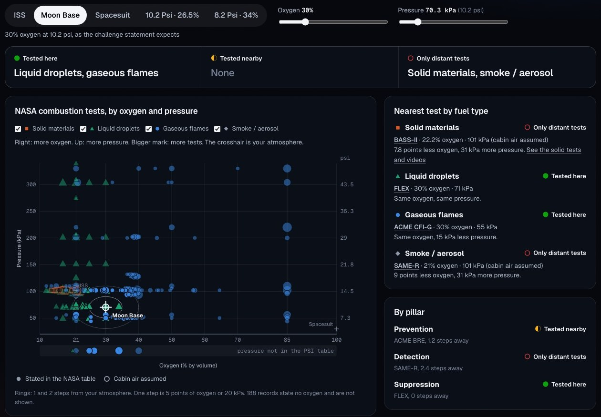
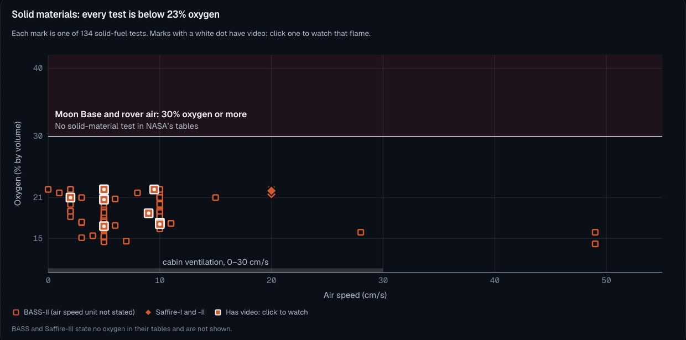
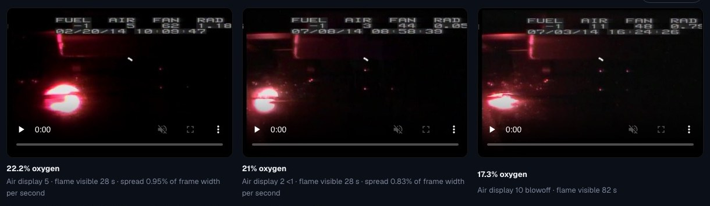
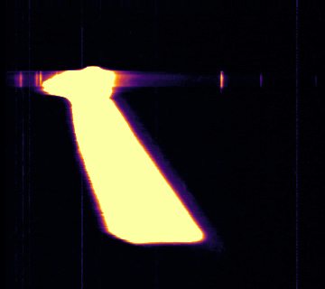
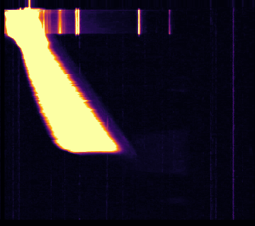
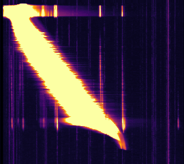
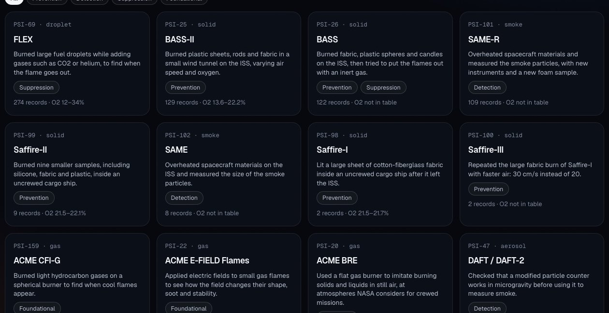

The evidence map for fire safety in space: what NASA has tested about fire in microgravity, and what it has not.
Each investigation in NASA’s PSI archive has its own table, units and level of detail. An engineer cannot ask a simple question: has this been tested in my cabin air?
| Investigation | Oxygen as written | Pressure as written |
|---|---|---|
| FLEX | 0.21 (mole fraction) | 759.8 mmHg |
| BASS-II | 22.2 (% by volume) | not in table |
| ACME CFI-G | XO2 0.85 | 1.1033 bar |
| ACME s-Flame | “~21% O2 with N2” | “~1 atm” (footnote) |
| ACME BRE | “21; 26.5; 40”, “3400%” | not in table |
The Moon Base and pressurized rovers are expected to run at 30% oxygen or more, at 10.2 psi or less.
More oxygen makes materials much more flammable. Designers need to know which evidence applies to that air, and which does not.
Atmosphere figures: challenge statement.
Open NASA data makes this possible: every record, table and video comes from the PSI archive, released under CC0.

The highest oxygen at which any solid material was burned, in the tables that state oxygen. The Moon Base expects 30% or more.
●Tested in that air: fuel droplets (FLEX, 30% at 71 kPa) and gas flames (ACME CFI-G)
○Only distant tests: solid materials and smoke detection
Cabin materials are solids. That is where the evidence gap is.





Flame fingerprint: position runs across, time runs down. A slanted streak is a flame moving along the sample.
Code and these slides were written with an AI assistant and reviewed by the team.
Live site
alehcs.github.io/fire-evidence-map
Code and dataset
github.com/Alehcs/fire-evidence-map
Team Auralis
Alejandro Cornejo · Benjamin Lopez
